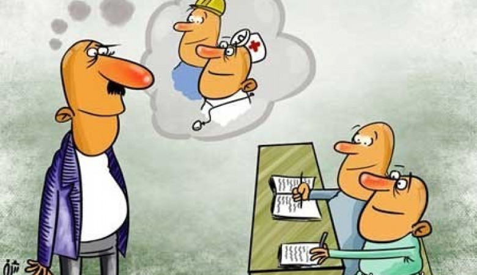

مجله بهار تایمز
صاحب امتیاز: کانون نشریه دانشگاه بهار
از اجتماع فراریم!!!
نویسنده: محمد خدادادی
تو کتابهای مختلف از انسان به این شکل تعریف شده:
انسان، موجودی اجتماعی است. انسان با قرار گرفتن در اجتماع از زندگی لذت خواهد برد و این امری بسیار حیاتی است.
پس چگونه است که ما از اجتماعها فراری هستیم؟
گذر زمان که تجربههای بد فردی و اجتماعی ایجاد کرده باعث شده که ما هم دیگه از اجتماع فراری باشیم. اما این فقط چیزیه که دیده میشه.
حتی اگر ارتباطی بین دو نفر شکل بگیره یعنی اجتماع به وجود اومده و ارتباط ما با دوستمون، تفریحاتمون با آشنایان، خانوادمون و هم کلاسیمون یا هر کس دیگهای که به هر شکلی با ما ارتباط داره ما رو وارد اجتماع میکنه. و در بهبوهههای زندگی اینامید ما برای ادامه مسیر زندگی هست.
قاتلی با نقاب اجتماع
نویسنده: هدیه غلامعلی زاده
# آن روی سکه
تیک تاک. تیک تاک. تیک تاک.
به ساعت روی دیوار چشم دوخته بود و تلاش میکرد لبخند مسخرهی روی لبش را حفظ کند. عقربهها انگار که مرده باشند، تکان نمیخوردند. ساعت قاه قاه به اضطرابش میخندید، صدای خندههای جمع و حرفهای دروغینشان مثل مته مغزش را سوراخ میکرد و او همچنان با آن لبخند مسخره ساعت را میپایید.
هی مارتا، چرا مثل آدمای افسرده و منزوی رفتار میکنی؟ حتی یک کلمه هم حرف نزدی!
با شنیدن نامش سر چرخاند و دید دختری که آن حرف را زده حالا دارد به منزوی بودنش میخندد.
دهان باز کرد تا بگوید "افسرده و منزوی نیستم. فقط نمیخوام اینجا باشم" اما نگفت! فقط از جا بلند شد و لبخند بیمعنایی روی لبهایش نشاند.
متأسفم. سردرد دارم. میرم یکم بخوابم.
پیش از انکه برود، کنایهای را از زن مغرور دیگری شنید "سردرد بهانه خوبیه تا افسردگیت رو پنهان کنی!"
جوابی نداد. میدانست آنها آنقدر بیچارهاند که از ضعف دیگران تغذیه میکنند. در اینطور مهمانیها همه فقط دروغ میگفتند و پز فرزندان و همسران موفقشان را میدادند. در دل به رنج و بیچارگی یکدیگر میخندیدند و با تحقیر فرد کناریشان، پلهای میساختند تا احساس بهتری پیدا کنند.
آنها بیمار بودند. او نمیخواست آنجا بنشیند و پز نمرههای عالی و رتبههای نداشتهاش را بدهد.
وارد اتاقش شد و روی تخت دراز کشید. هدفون روی گوشهایش گذاشت و اجازه داد آرامشی مصنوعی زیر پوستش بخزد.
ناگهان درب اتاقش با خشم باز شد و مادرش در حالی که غرولند میکرد، آن را به هم کوبید. مارتا وحشتزده در جایش نشست و هدفون را از روی گوشهایش برداشت.
چیه؟
مادرش کنار تختایستاد و طوری که صدایش بیرون نرود فریاد زد:
چند بار گفتم اون شخصیت اسکیزوئید(جمع گریز) مزخرفت رو برای خودت نگه دار؟ حداقل باید جلوی مهمونامون وانمود کنی اینطور نیست! میخوای همه جا جار بزنییه افسرده اسکیزوئید بدبختی؟
مارتا احساس کرد این حرفها جایی در سینهاش را به آتش کشید. عصبی خندید و از روی تخت بلند شد
من افسرده نیستم! بدبخت هم نیستم! فقط حالم از اون جمع دروغین بهم میخوره. همه چیزی که تو میخوای اینه که پز افتخارات دخترتو بدی در حالی که من از اینکار متنفرم! اصلاً برات مهم نیست من چه احساسی دارم، چقدر توی جمع بهم سخت میگذره یا چقدر از توی جمع بودن متنفرم. تو فقط به فکر خودتی!
مادرش با خشم سر تکان داد:
بعد تمومشدن این مهمونی صحبت میکنیم!
مارتا روی تخت نشست، زانوهایش را در آغوش گرفت و گریست. او مشکلی نداشت، فقط میخواست خودش باشد. اجتماع یعنی دروغ... یعنی لبخندهای مصنوعی و محبتهای غیر واقعی و این دنیا همیشه کسانی را که بر خلافش حرف میزنند، قربانی میکند.
این دنیا کاری میکند فکر کنی مثل لکه جوهر، کاغذ را کثیف میکنی. کاری میکند فکر کنی تو اشتباهی که زندگی در جمع را بلد نیستی، کاری میکند از خودت بیزار شوی و بیشتر و بیشتر در لاک انزوا گزینیات فرو بروی.
اما واقعیت این است که همه اشتباهند و فقط به شیوههای مختلفی آن را نشان میدهند.
تیک تاک. تیک تاک. تیک تاک.
عقربهها با سرعت گذشتند و دختری درب اتاق مارتا را باز کرد تا او را برای شام صدا کند. اما بلند شدن صدای جیغ ناگهانیاش، همه را ترساند.
دخترک تقریباً فریاد زد:
- مارتا...
مارتا! مارتا روی زمین افتاده و یه بسته قرص توی دستشه!
و کسی چه میدانست که مارتا همیشه از زندگی کردن خسته بود؟ کسی چه میدانست که مارتاها گاهی فقط دلیل میخواهند؟ گاهی به جای سرزنش، توجه میخواهند.
جامعه هرگز درک نمیکند و میخندد تا زمانی که همه چیز تمام شود
و وای بر روزی که مرگ، راه نجات باشد.
در دورنمایی از واقعیت، همه چیز از اجتماع شروع میشود. نفرتها، قتلها، خودکشیها، خود بیزاریها، موفقیتها، شکستها، جنگها.
اجتماع، با حکم ضروری بودنش، انسانهارا به کشتن میدهد، آنها را به جان هم میاندازد یا به هم وابسته میکند.
و چه میشود اگر نخواهی جزئی از این اجتماع باشی؟ منفور میشوی، دوست نداشتنی و سرد و خشک خطابت میکنند و آرام آرام از حقهای طبیعی زندگیات منع میشوی.
زندگی جمعی جنایتی بود که انسان نمیتوانست بدون آن زندگی کند. جنایتی که بیشتر از مفید بودن، بشریت را به نابودی کشاند.
در زندگی امروزه، اگر اجتماعی نباشی هیچکس برایت جا و کاری نخواهد داشت. آری، بشریت همچنان با عقل نداشتهاش، عاقلترین موجود روی زمین است.
پایان
چطور میخوام نفس بکشم؟؟؟
 نویسنده:
محمد خدادادی
نویسنده:
محمد خدادادی
# معرفی فیلم
تو تموم لحظه های زندگی باید تصمیم بگیریم که چطور زندگی کنیم؟
از چپ بریم یا از راست؟ تفریح کنیم یا کار؟ خوشحال باشیم یا ناراحت؟ و همیشه تصمیمات ما گره خورده به اطرافیانمون... کسانی که در کنارمون قرار میگیرن و باعث میشن ما مسیر زندگیمون تغییر کنه. برای همینه که همیشه کسانی رو انتخاب میکنیم که با ما اشتراکاتی داشته باشن و هر چه این اشتراکات بیشتر میشه، حس و حال ما از این همراهی بهتر میشه.
دیروز یک نفر به من یک فیلم معرفی کرد که تونستم نمونه یک حس خوب رو با پوست و گوشت استخونم درک کنم! فیلم درباره معلمی بود که سابقه تحصیلیش رو دانش آموزا دیده بودن و حالا اومدن از گذشتش ازش بپرسن.
دانش آموز: خدای من!
انجمن شاعران مرده چی بود؟
معلم: آقایون! می تونین یک رازو نگه دارین؟
انجمن شاعران مرده، انجمنی بود برای مکیدن جوهر زندگی. در شروع هر جلسه ما یک جمله از اشعار ثارو رو دکلمه میکردیم. میدونید، ما تو یه غار قدیمی سرخپوستی دور هم جمع میشدیم و به نوبت از ثارو، ویتمن یا شلی یا شعرای بزرگ دیگه شعر میخوندیم. حتی بعضی مواقع اشعار خودمونو میخوندیم
و افسون جذبه اون لحظهها مسحورمون می کرد!
دانش آموز: منظوتون اینه که انجمن یه گروه از بچه هایی بود که دور هم مینشستن و شعر میخوندن؟
معلم: نه آقای اور استریت، اون فقط یه گروه از بچه ها نبودن، ما یه انجمن خشک و رسمی نبودیم! ما یک انجمن عاشقانه بودیم. ما فقط شعر نمیخوندیم، بلکه شعر مثل عسل از زبونمون جاری میشد! روحمون به پرواز در میاومد! زنها از خود بیخود می شدن، خدایان آفریده میشدن...حتی وصف یه همچین حسی با یه گروه من و اقوا میکنه...
برای گذروندن یه عصر دلپذیر، ایده بدی نبود.
شما دوست دارید چه حسی رو با یه گروه از افراد دیگه تجربه کنید؟

لا توماتینا
نویسنده: محدثه طوبا
# معرفی فستیوال
اسپانیا. سرزمین جشنواره هاست. اگر به دنبال گذراندن اوقاتی خوش، خاص و هیجانانگیز هستی، پیشنهاد میکنم به اسپانیا سفر کنی و به جشنوارههای عجیب و غریبش سر بزنی! گوجه فرنگی، اسم جشنواره چهارشنبه آخر ماه اوت اسپانیاست. مشخص نیست آغاز جشنواره از کجا و چگونه بوده.
واژگونی کامیون گوجه فرنگی، شوخی بین کشاورزان و مردم یا پرتاب گوجه فرنگی توسط جوانانی به حسادت از رژه چهرههای شاخص اسپانیا جزو معدود صحبت هایی هستش که برای شروع این جشنواره نقل میشه.
گذشتن از علت و باعث پیدایش و فرایند رسمی شدن این جشنواره و تعریف و توضیح آنچه در جشنواره میگذرد را مایل ترم؛
خب اگه به اسپانیا سفر کردی،
جهت شرکت در جشنواره سرخ و بانمک گوجه فرنگیاش
برای ساختن خاطرهها و ژست عکس و ثبت ایده فیلم برای استوری هات
کمکت میکنم
مواد لازم:
خوب فقط گوجه فرنگی! البته رسیده و ترجیحا کمی له شده!
دستی پرتوان،
سه دور چرخش،
نفس عمیق،
تمرکز
و پرتابی با شدتی هنرمندانه همچین که بچسبد اما دماغ را نترکاند!
متأسفم
نمیتونی لباس رفیقت را به دو قسمت مساوی تقسیم کنی و وقتی لخت خالی و یک سر از پوست و گوشت گوجه فرنگی پر و خجالتزدهست ازش عکس بگیری و برای سالها سوژهاش کنی!
نه اینکه باایدهات مشکل داشته باشم
نه! اصلا خب قانون این اجازه رو نمیده...
بالاخره در این جشنواره راه ساختن خاطره و خوش گذروندن سادهست.
همه هستن، گوجه فرنگی هم هست.
ذهن خلاق تو خاطرهها رو میسازه،
مثل شنای قورباغه تو سیلاب گوجه فرنگی!
میریم سراغ مورد بعدی...
هدفگیری حرفهای! اونم برای شکار لحظهای که کسی رو دیدی که از پوکوندن صورت دیگری نیشش تا بناگوشش بازه، بتونی زیرکانه زبون کوچیکه حلقشو نشونه بگیری و شلیک کنی!
و خب حتماً تو باجنبه و پایهای چون هرآن ممکنه اسم تو یا ضمیر هی آقا یا خانم نجوا بشه و تو تا برگشتی با پاشیده شدن یه سطل آب گوجه فرنگی به صورتت در حالی که سلولهای گیاهی گوجه فرنگی با سلولهای جانوری درونیترین لایه چشمت بغل تو بغل میشن، در کمال آرامش لبخند میزنی به دوربین و میگی واااای چه باحال!
تهش میدونم اگه پیگیر خاطره خاص و پایه هیجانی، سر میزنی بهش و تو دنیای قرمز و کیوت والنسیا پا میزاری...
کانون یا اجتماع چیست؟
 نویسنده:
موحده خوش طبخ
نویسنده:
موحده خوش طبخ
# دانشنامه
کانون، به صورت لغوی در فرهنگ عمید بدین صورت معنی شدهاست "محل گرد آمدن گروهی با هدف خاص " یا به معنی "انجمن" یا "مرکز" است؛
ولی به صورت کلی اگر بخواهیم معنایی برای کانون تعریف کنیم، میشود اینگونه گفت که یک واحد اجتماعی با اشتراکاتی شبیه به هم که میتواند مکان، هنجارها، مذهب، ارزشها، آداب و رسوم یا هویت باشد. کانونها ممکن است در یک منطقه جغرافیایی معین (مثلاً یک کشور، روستا، شهر یا محله) یا در فضای مجازی از طریق پلتفرمهای ارتباطی، عقاید و فعالیتهای خود را به اشتراک بگذارند.
معمولاً در کانونها روابطی بادوام ایجاد میشود که فراتر از پیوندهای تبارشناختی فوری است، همچنین حس همنوعی را تعریف میکند که برای هویت افراد، عملکرد و نقش آنها در اجتماعهای دیگر مانند خانواده، خانه، کار، دولت، جامعه یا به طور کلی انسانیت مهم است. اگرچه کانونها یا اجتماعها معمولاً نسبت به پیوندهای اجتماعی شخصی کوچک هستند، اما کانونها یا اجتماعات ممکن است به گروههای بزرگی مانند جوامع ملی، جوامع بینالمللی و جوامع مجازی نیز اشاره داشته باشد.
کانونها یا اجتماعهای انسانی ممکن است قصد، اعتقاد، منابع، ترجیحات، نیازها و خطرات مشترک داشته باشند که بر هویت شرکتکنندگان و میزان انسجام آنها تأثیر میگذارد.

اتحاد: کلید پیروزی اجتماع
نویسنده: علی نیرومند
# دانشنامه
اجتماع چیست؟ اگر بخواهیم به معنای لغوی اجتماع در لغتنامه دهخدا مراجع کنیم با این تعاریف مواجه میشویم: جامعه، ازدحام، تجمع، گردهمایی، دسته، گروه، محاق. همان گونه که در متضاد آن داریم: تفرق و تفرقه.
حتماً تا به حال در اقصی نقاط جهان، ماشینهای آبپاش بزرگی را دیدهاید که به سمت اجتماعی از مردم خشمگین فشار شدیدی از آب را پرتاب میکند که قطعاً دلیل آن سرد کردن کله معترضان و در نتیجه فروکش خشونت بیانتهای آن هاست تا رانندگان آن ماشینهای بزرگ آبپاش به صورت متمدنانه با آنها صحبت کنند و به آنها عشقی بیکران بورزند و آنها را از جهالت رهایی دهند، اما تا به حال به آن فکر کردهاید که شاید دلیل دومی هم داشته باشد؟
آری؛ شاید هدفشان "تفرقه" بین آن گردهمایی، دسته یا گروه است! دقیقاً متضاد کلمات مترادف اجتماع!
حال باید از خود پرسید چرا؟
چرا سعی در ایجاد تفرقه و فراق در آن اجتماع را دارند؟ مگر این اجتماع چیست و چه قدرتی دارد که علاج واقعه را قبل یا در هنگام وقوع آن میکنند؟
بیایید تمام محدودیتها را کنار بگذاریم؛ اگر اعضای یک اجتماع با یکدیگر همدل شوند به سلاح بسیار عظیم اتحاد دست پیدا خواهند کرد که میتوانند میز بازی را برای آن نیم درصدی که میز بازی را میچرخانند و ظلم و نا امیدی و بیچارگی را بر ۹۹. ۵ درصد دیگر روا میدارند، به کل به آتش بکشند و آنها را در برابر اعمال خود پاسخگو کنند؛ البته اگر این ۹۹. ۵ درصد "همدل" شوند و "اتحاد" یابند(که کار واقعاً دشواری ست). با توجه به ذات و شخصیت جدید انسانها، آن ۰. ۵ درصد خیالشان از این بابت بسیار راحت است (البته شایدم کار دشواری باشد!)
حال که تمام محدودیتها را کنار گذاشتیهایم، بیایید تصور کنیم که در برابر هر یک نفر که دستورات ۰. ۵درصدیها را اجرا میکند، ۱۰۰ نفر همدل و متحد در مقابلش باشند. آیا آن فرد در برابر افراد متحد شانسی خواهد داشت؟ با توجه به کنارگذاشتن محدودیتها قطعاً میتوان گفت خیر!
حال سؤال بسیار مهم این است: آیا این سلاح روزی در اختیار۹۹. ۵درصدیها قرار میگیرد؟ یا صرفاً ایده و تئوریای در ذهن انسانها خواهد ماند تا نور آن خاموش شود؟ شاید هم خاموش شدن آن علاج آن واقعه (دستیابی به اتحاد) قبل وقوع است؟
اجتماعِ نا اجتماع
 نویسنده: علیرضا بهرامی# طنز
میدانم اولین فکری که با شنیدن کلمه ی اجتماع به ذهن دیگران می آید چیست؟ ولی بنده اولین چیزی که در ذهنم تداعی میشود مطالعات اجتماعیست
که بسیار درس غیر طبیعی و غیر اجتماعی بود در واقع دورن آن از تاریخ بگیر تا حرفه و فن و معرفی ابزار آلات فنی و.... وجود داشت جز اجتماع و نکته بسیار ترسناک تر ماجرا اینجا بود که اتفاقا معلم این درس اجتماعی تحت شرایطی اجتماعی نبود ایشان در اصل طوری بودند که هر موقع یکی از شاگردانش را از چند فرسخی زیارت میکرد احوال شاگرد را با پرسیدن چند سوال اجتماعی جویا میشدند و سر کلاس هم جملهی بسیار معروفی داشتند خدا خیرشان بدهد یک جلسه در میان می فرمودند(دیگر از سوال پرسیدن خسته شده ام نفری یک برگه در بیاورید میخواهم امتحان بگیرم)
حال بهتر است بیخیال این خاطرات نچندان اجتماعی و حوصله سر بر گذر کنیم و برویم سر بحث اصلیمان (اجتماع)
اجتماع چیست؟ تعریف کتابی آن اینگونه است (بودن یک الی دو یا سه شخص کنار یکد یگر خود به خود و خود جوش اجتماع می آید) اکنون با ذهن باز ببینید تفسیر این جانب در مورد این اجتماع کوچک، بیایید در نظر بگیریم دو نفر از افراد این جامعه نااهل یا به زبان خودمانی ترش مزه پران، دلقک، کرمدار یا غیره باشند آنقدر با آن نفر سوم به قول خودشان شوخی می کنند که بیچاره راهی جز فرار برایش باقی نمی ماند حال این فراری شدن خودش سه حالت پیچیده دارد میرویم سراغ حالت اول :زمانی که فرد مسخره شده در حال فرار است عقل ناقصش به خوبیه همیشه کار نمی کند هر چند بنظر نمی رسد در گذشته نیز درست کار کرده باشد و گرنه به سمت این نااهلان نمی رفت بگذریم موقع فرار چون دیگر پناهی ندارد تا بتواند با آن درد دل و ناگفته های دل شکسته اش را بیرون بریزد اولین فکری به ذهنش می رسد به مواد مخدر پناه ببرد از سیگار شروع می کند و در آخر به سطح بالاترین مواد ممکن دست یافته است که البته در این بعد سال ها زندگی در جوب های سطح شهر بر روی کارتنی یا جوبی در حالی دوستان کرمدارش را نفرین میکند و جمله ای همیشه ورد زبانش هست را تکرار میکند(امان از دوستان ناباب) جان به جان آفرین تسلیم کرده البته نرم افزار های همچون بلد و نشان از این شخص میتوانند به عنوان بهترین راهنما برای موش های در جوب ها پرسه می زنند استفاده کنند بهتر است برویم سراغ حالت دوم: در این حالت فرد فراری و دلشکسته که همچنان هیچ پناهی ندارد حتما با خود می گویید چرا این شخص بی شخصیت سراغ خانواده اش نمی رود پاسخ راحت است زیرا اگر در خانواده درست مثل بچه آدم با او رفتار می شد سراغ هر کس و نا کسی نمی رفت
دیگر تکیه گاهی برایش نمانده با خود تصمیم میگیرد که خودکشی کند البته از قبل همه چیز را برنامه ریزی کرده و نامه ای در جیبش گذاشته است و به بالای پل هوایی رفته و خود را همانند عقابی همیشه تنها به پایین می اندازد و در این هنگام است که یک پراید که همیشه در صحنه است روی این نازنین شخص عبور میکند و عکس این عزیز بر روی آسفالت کف جاده حک می کند
از اتاق فرمان خبر داده اند که نامه ی شخص متوفا پیدا شده است
(متن نامه)
(اکنون که دیگر راهی جز خودکشی برایم نمانده است اگر و فقط اگر یک نفر به من لبخند یا نمیچه لبخندی حواله کند تصمیمم را عوض می کنم البته این نکته را باید ذکر کنم که این عینک دودی و ضعیف بودن چشمانم که رازش را فقط من و خدایم در جریانش هستیم کارم کمی مشکل می کند و همچنان خدا نگذرد از دوستان کرمدار و شوخ طبع.)
حالت سوم ماجرا از این قرار است که نه بیایید شما حدس بزنید 10 ثانیه به شما مهلت می دهم اگر درست حدس زدید شماره کارت بدهید نامرد باشد صاحب نشریه به کارتتان واریز نکند
خب 10 ثانیه تمام شد بهتر است دیگر به مغزهای انیشتین طورتان فشار نیاورید در حالت سوم فردفرار به درس و مشق و کتاب پناه می برد قید تمام تفریحات و خوش گذرانی را زده و تلاش و پشتکار را پیشه راهش میکند در این زمان پله طرقی را یکی در میان برمی دارد و همسری در خور شأن و مقامش انتخاب می نماید و بچه دار نیز می شوند (به به مبارکا باشد) ولی از آنجایی که در جامعه روی خوش ندیده همیشه تنها و عبوس بوده است با بچه اش نیز رفتار درستی ندارد و آنچنان به او سخت می گیرد که نگویم برایتان
(مدیونید اگر فکر کنید با من چنین رفتاری شده است) در پایان باید بگویم بیایید در اجتماع مثل آدم باشیم و با دوستان و دور و بری هایمان مثل آدمیزاد رفتار کنیم